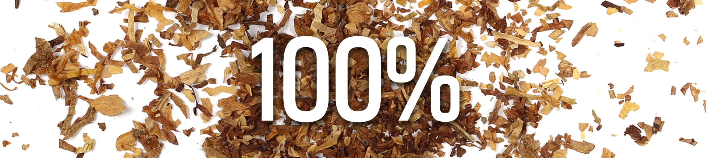
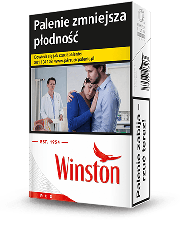

Papierosy marki Winston
to jedne z najbardziej rozpoznawalnych
papierosów na świecie
- Marka Winston powstała w Stanach Zjednoczonych w 1954 roku. To czasy, kiedy rodził się rock’n roll, debiutował Elvis Presley, a w amerykańskich domach pojawiały się pierwsze kolorowe telewizory. Swoją nazwę Winston zawdzięcza miejscu powstania: małemu miasteczku Winston w Północnej Karolinie. Przez lata Winston budował swoją pozycję zawsze stawiając na jakość produktów. Hasło marki „Winston tastes good like a cigarette should” stało się jednym z najbardziej popularnych sloganów reklamowych XX wieku.
- 
- Swoją jakość Winston zawdzięcza wyjątkowej mieszance tytoni, które są w 100% ręcznie selekcjonowane. Właśnie to przywiązanie do jakości, sprawia, że papierosy marki Winston mają wyjątkowy smak.
- Dziś Winston jest jedną z największych marek tytoniowych na świecie. Dostępny jest w ponad 120 krajach. W Polsce, od 2008 roku z powodzeniem zyskuje uznanie konsumentów, którzy poszukują najlepszej jakości w rozsądnej cenie.
- Winston to marka, której nadrzędną wartością jest wolność. Symbolem wolności jest ikona orła widoczna na każdej paczce papierosów Winston. Wolność, którą podkreśla Winston, dla każdego może oznaczać co innego. Najważniejsze, żeby z niej korzystać robiąc to, co sprawia największą przyjemność.
PRODUKTY MARKI WINSTON
- Winston BLUE Superline
- Winston GREEN Superline
- Winston Option Superline
Dzięki tak urozmaiconej ofercie, Winston odpowiada na wszystkie potrzeby konsumentów. Daje swoim konsumentom wolność wyboru gwarantując najwyższą jakość w przystępnej cenie. W ofercie marki Winston każdy znajdzie coś dla siebie. Tak jak chce, tak, jak lubi.
Jeśli lubisz delektować się łagodnym smakiem papierosów, wybierz Winston Blue Superline. Sięgnij po Winston Green Superline o zdecydowanie mentolowym aromacie lub daj sobie wybór i zmieniaj smak ze zwykłego na miętowy w trakcie palenia Winston Option Superline.
9 wariantów. 9 możliwości. Wolność wyboru.
- 
- Winston RED ks
- Winston blue ks
- Winston option ks
Dzięki tak urozmaiconej ofercie, Winston odpowiada na wszystkie potrzeby konsumentów. Daje swoim konsumentom wolność wyboru gwarantując najwyższą jakość w przystępnej cenie. W ofercie marki Winston każdy znajdzie coś dla siebie. Tak jak chce, tak, jak lubi.
Winston Red King Size jest źródłem intensywnych doznań smakowych. Jeśli wolisz łagodniejszy smak, wybierz Winston Blue King Size. Winston Option King Size łączy zalety klasycznych papierosów z miętowym aromatem. Wybór należy do Ciebie.
9 wariantów. 9 możliwości. Wolność wyboru.
- Winston RED ks
- Winston blue ks
- Winston option ks
Dzięki tak urozmaiconej ofercie, Winston odpowiada na wszystkie potrzeby konsumentów. Daje swoim konsumentom wolność wyboru gwarantując najwyższą jakość w przystępnej cenie. W ofercie marki Winston każdy znajdzie coś dla siebie. Tak jak chce, tak, jak lubi.
Wybór dla tych, którzy cenią sobie ekonomiczne rozwiązania. Dłuższy papieros to dłuższa chwila z ulubionym smakiem.
Winston Red 100s zapewniają intensywne doznania smakowe. Łagodniejszy wariant klasycznych papierosów to Winston Blue 100s. Winston Green 100s powstały dla osób, które wybierają smak mentolowy.
9 wariantów. 9 możliwości. Wolność wyboru.